1. Overview
The following guide covers user interface (UI) graphics for Eclipse-based tools. All visual user interface elements created for Eclipse-based tools follow a common style called the Eclipse visual style or Eclipse style. Any product, tool, or plug-in based on the Eclipse Workbench should follow these guidelines to help ensure consistency of visual user interface elements. Consistency includes visual style, meaning, and implementation conventions.
1.1. Audience
These guidelines are for anyone creating Eclipse style user interface graphics or seeking best practices for their use. This is not a how-to guide, but you will find instructions for some tasks and a number of resources to assist in making the graphics. If you are a designer, you will be interested in the Design, Specifications, and Implementation sections. If you are a Developer, the Specifications and Implementations sections will be of most value to you.
2. Design
This section provides guidance and tools for creating Eclipse style icons and wizard graphics.
2.1. Style & Design
This section covers style characteristics and gives guidance for designing effective Eclipse user interface graphics including topics such as metaphor, composition, lighting, color and more.
Before beginning to design Eclipse-style icons or wizard banner graphics, first check if the concept or visual elements have been covered already. Refer to the Consistency & Reuse and Common Elements sections for these elements. If designing an icon or wizard graphic from the start, consider the underlying concept and how it can best be represented. There might be an existing metaphor to appropriately convey the concept.
2.1.1. Metaphor
The purpose of a metaphor is to create meaning. A metaphor will be meaningful if it is based on ideas the audience is already familiar with, and if it fits conceptually with the content and context. It should be clear, easily learned, and readily distinguishable. For example, project and file folders are used in the Eclipse-based workspace the same way they are used in the real world to organize and store project-related information. Since many concepts already have associated metaphors, use the existing metaphors, and when the concept allows, create new representations that extend the metaphor.
2.1.2. Icons
2.1.2.1. Style characteristics
The icons should have a clean elegant feel with rich but subtle color and lighting. They are rendered as if viewed directly from in front, but have the illusion of three dimensions. This affect is achieved by using color gradients and an implied light source from the top. A kind of ambient light is also used to illuminate different parts of each icon, either to bring out its shape or to emphasize a certain aspect of the image. Other key features include color gradient outlines to define edges and strong identifiable shapes with as few combined elements as possible.
- Lighting
-
For most elements, lighting is achieved with simple vertical gradients. The gradients go from a lighter color at the top of the element to a darker color at the bottom. This approach gives subtle form and illuminates basic elements such as files, folders, and other rectilinear shapes. For spheres, triangles and more complex forms, an additional reflective light source is added near the base of the element to give it volume and to ground it in its environment.
 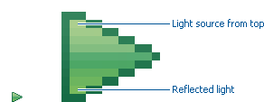
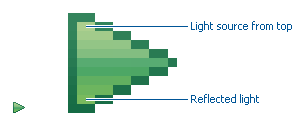 - Outlines
-
Each element within an individual icon features a single pixel keyline. Solid color lines define the top and bottom edges of the element, and gradients define the sides. To reinforce the light source from the top, the keyline color goes from light at the top to dark color at the bottom. The gradient along the sides bridges these light and dark colors.
The color of the outline will vary according to the color of the individual element. In the example below, the file has a dark grayish-blue base and a light ochre color top. This is a standard color outline for this type of object. You will see that other elements use standard color outlines as well. Read more about standard colors under Color below, and use the Common Elements design resource for reusable elements.

- Style differences between types
-
View (includes Perspective and Fast View), Model Object (includes Table), Object Overlay, Progress Indicator, and Diagram icons have more saturated color and higher contrast than Toolbar, Local Toolbar, and Palette icons. It is important these icons stand out as focal points in the user interface because they are key indicators of the model. Since there are no tooltips associated with object type icons, they are less, or not, accessible to persons with low or no vision. Increased saturation and contrast helps compensate for this.
Toolbar, Toolbar Wizard, Local Toolbar, and Palette icons have a more subtle approach to color and contrast than their object-based counterparts. These icons are more subtle because they are reliably present in the user interface and should not be distracting. Tooltips for these types of icons make them accessible to persons with low or no vision. Additionally, the use of color for the outlines, instead of black, means the images are not lost if people choose to work in a high-contrast (usually black) accessibility mode.
A subset of core reusable elements illustrate this distinction best: Project, File, and Database elements each have a rich saturated version for the treeview and a light subtle version for the toolbar and local toolbar. Look for these differences in other icons within the Common Elements files.
Here are the Project, File, and Database icons rendered as model objects:
Here are the same icons rendered in the more low-key toolbar style:

2.1.2.2. Composition
Aim for simplicity. Bring focus to the primary function or object within an icon by using different visual cues, such as color, contrast, lighting, size and location to differentiate elements. To improve clarity and reduce visual noise, avoid using too many elements within any given icon.
The location of individual elements in an icon can have an impact on its meaning and recognition value. People learn, recognize, and expect patterns: using a consistent location for visual elements, when possible, establishes a pattern that is useful for identifying the object type or function of an individual or set of icons.
- Actions
-
Actions in toolbar and local toolbar icons tend to be on the left of the icon and identify a command that will be performed on an object or set of objects. For example, the following icon represents "Deploy Script" on the toolbar. The action "deploy" is represented by a green arrow on the left of the script object:

However, not all actions are located on the left. To convey the intended meaning of a concept or to accommodate the context of the icon in the user interface, diverging from convention is sometimes required. Here are some actions that are notable exceptions to the action-on-the-left convention:
Create or New is represented by a sparkle in the upper-right corner to denote the creation of a sparkling "new" object. The sparkle, though an object itself, is a metaphor for creating something new. Its location in the icon space is precisely 1 pixel down from the top and flush with the right edge of the 16 x 16 icon space. Using this exact location ensures a clean uncluttered presentation when seen across a number of "new" action icons on the toolbar or in the menu. For example:
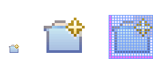Import, when associated with an object, is represented by an arrow in the bottom-right corner facing downward and to the right. Location and direction are important here to convey that an object will be imported from another location into the workbench. Note that its counterpart, Export, follows the action-on-the-left convention with an arrow in the bottom-left corner because this location and direction is appropriate for denoting that an object will be exported from the workbench to another location.

Open is represented by a curved arrow in the upper-right corner of the icon. The location, shape, and direction of the arrow indicate that the object is being opened. This action is used mostly on book- or file-type objects. For example:

Pin is represented by a pushpin on the right of the object. The "Pin Fast View" icon is located on the right side of a view title bar. The location of the icon and the action within the icon indicate the side where the view will be pinned—on the right. Because of this location, the pin is pointing inward toward the object to be pinned. Placing the pin on the left would not work as well given the context and literal action of the icon.

- Objects
-
Objects are stacked vertically, often in large number, within treeviews and lists. Because of this stacking, attention to the alignment of objects within the icon design space is important. This is particularly true of repeated objects that use the same elements. For example, a file or folder used as a base for a series of model object images, should be located in the same place within the 16 x 16 pixel icon space in all of the images within the series. To illustrate the difference between aligned and not aligned objects, first, here is an example showing the base element—in this case the yellow folder—not aligned the same throughout a series of icons. The result is a choppy, harder to scan treeview or list:

Second, here is an example showing the same base folder element aligned throughout the set. The result is a clean, easier to scan treeview or list:

- States
-
States are the result of a direct of indirect action on an object. Once an action is taken on an object, the object reflects that action by showing its state. This state is generally shown on the right side of the icon. For example, invoking the action "Run on Server" will show the server running in the Servers view with a green arrow run action on the right side of the server object.

Stopping the server will show the blue square stop action on the right of the server object.

2.1.2.3. Color Palette & Themes
An entire set of graphical elements, such as icons, wizards and user assistance graphics, requires a consistent, family-like appearance across the user interface (UI); contrarily, individual and sub-families of graphics require differentiation. Color choices can either bring unity or cause distraction.
Eclipse supports 24 bit color depth, which means that colors used to create UI graphics can come from outside the defined 8 bit, or 256 color Eclipse-style palette. However, using the Eclipse-style palette as the base for applying color to your graphics will help ensure a visual fit within the Eclipse environment.
To achieve a consistent appearance in graphics across the UI, use a common color palette as the basis for creating your graphical elements.
Eclipse-based graphics tend to use a common or dominant set of colors: Blue and yellow are the base colors, with green, red, brown, purple, and beige used for signifying specific object types or functions. Here is the palette, with a number of examples of how its different colors are used.

The Eclipse-style palette contains the core and dominant colors used in Eclipse-based icons, wizard banner graphics, and user assistance graphics. You can download the palette in the ".aco", ".ai" and ".gpl" file format.

The two dominant colors, blue and yellow, bring harmony to the overall presentation of the user interface. Themselves complementary, blue and yellow form a base on which to apply accent colors. These few examples show blue and yellow as the common base for different icons, and how other accent colors have been applied to help convey a concept.
Green is often used to indicate that something is being run or initiated, and as a common accent color. The actions "run" and "play" are prime examples of how the color green is applied to support a concept.

Red is used to indicate an error or to signal an alert, but red is also used in real-world objects that are typically red.
Brown is used less than the other colors mentioned, but it is generally associated with specific types of objects: the Java "package", "bundle", and the "Enterprise Java Bean (EJB)".

Purple is associated with “Web Site" or "Site Project", plugin "fragment", and Java "Interface”.
Beige is associated with "template" and "generic" objects. While not limited to these two object types, beige is usually reserved for placeholder or unrealized objects.
2.1.2.4. Tips and Tricks
-
Use color from existing graphics to quickly make graphics that are consistent with the Eclipse style without having to use the palette directly, select colors from existing Eclipse-based icons and wizards.
-
Consider the background when designing an icon, keep in mind the background color it will sit on. The various browsers and operating systems allow custom window backgrounds that people can set according to their own preferences. It is not always possible to know if an icon will be used in different places in the user interface, but generally, the background will be either white or a warm or cool mid-tone grey. Whether it is white or grey will depend on the icon type. Model Object, Object Overlay, and Diagram icons are usually on a white background, whereas Toolbar, Toolbar Wizard, Local Toolbar, and Palette icons usually sit on a mid-tone grey background.
To achieve the best quality of color and edge treatment, test your icons across all known targeted operating system theme backgrounds. Modify the icons where needed to work well on most, if not all, of the backgrounds. Here is an example of testing a View icon with the different operating system theme selection colors, and a set of Toolbar icons on a number of known backgrounds:

Antialiasing the edges is suitable if you know the background color. Since knowing the background color is not always possible, using medium to dark pixels on the edges will help ensure that the icon works well on most backgrounds. Using lighter edge pixels can result in poor quality, rough looking edges that do no blend well to the background. This is especially true of rounded shapes on dark backgrounds. The following example illustrates the effect of using lighter pixels on a round icon that sits on a medium to dark color background:
This example shows the same icon on the same background, but with darker edge pixels:

In some special cases, a single icon may appear on multiple backgrounds and will need to be designed specifically for each case.
-
Download the palette
You can download the palette in the ".aco", ".ai", and ".gpl" file format.To load the palette in Adobe Photoshop, open the "Swatches" palette and choose "Load Swatches…"; then navigate to where you saved the github.com/eclipse-platform/eclipse.platform.images/tree/master/org.eclipse.images/tools/eclipse-style_palette.aco "eclipse-style_palette.aco"] palette.
To load the palette in Adobe Illustrator, first save the "eclipse-style_palette.ai" palette in the Adobe Illustrator > Presets > Swatches folder. If you have Adobe Illustrator already open, you will need to restart it after adding this file. Once you restart Illustrator, go to Windows > Swatch Libraries and choose the "eclipse-style_palette.ai" palette from the list.
To use the ".gpl" palette in The GIMP open the "Palettes" dialog and choose "Import Palette" entry from the context menu.
The ".gpl" file format can also be used in Inkscape. Just copy the palette file into the user’s profile into the "/~/.config/inkscape/palettes" folder.
Save your images with the palette as a base
In Adobe Photoshop, when an image is complete and ready to be saved to GIF, index the image to "exact" color. This indexing preserves all of the colors the graphic was created with, including any colors you have added that are not contained in the base palette.
In The GIMP, simply Save As PNG.
- Related Information
-
This information replaces that provided in the Eclipse UI Guidelines, Version 2.1, in the section titled “Visual Design – Icon Palettes” (Guidelines 2.2-2.4):
The GIMP User Manual is available online at: www.gimp.org/docs/
2.1.3. Wizard Banner Graphics
2.1.3.1. Style characteristics
Like the Eclipse-style icons, wizard banner graphics have a clean presentation that is achieved by using rich but not overpowering color, a one-point perspective to show the elements clearly, subtle color gradients and soft lighting techniques to give the images a subtle three-dimensional form. Wizard banner graphics have the attribute of being larger than the icons, which allows for application of a more intricate, illustrative rendering style with more complex lighting.
- Lighting
-
Lighting for the wizard banner graphics can be a simple unidirectional source or a complex multidimensional source, depending on the shape of the elements in the graphic. Unlike the icons, where the light source tends to come directly from above, the wizard graphics are lit mainly from the top left, have variable lighting that is tailored to each graphic, and have the added visual dimension of a cast shadow. The three-dimensional look is achieved by using color blends and gradients in Adobe Illustrator to render the highlights, mid-tones, shadows, and reflected light.

- Shadow
-
For rectilinear objects, such as folders and files, an additional light source is implied from the left-front of the graphic, casting a shadow to the right of the graphic. This shadow is angled backward—to the right-back—at 45 degrees. When designing these types of graphics, consider the space the shadow will require by locating the graphical elements on the left side of the designated image area.
 Figure 1. fig:des_styl_wiz_shadow1
Figure 1. fig:des_styl_wiz_shadow1Spherical objects have a different shadow treatment than their rectangular counterparts. The shadow is positioned directly below the object and is elliptical in shape. The sphere touches the shadow, which has the effect of grounding the sphere to the surface below. Use this type of shadow for spherical and flat-bottomed round objects, such as the "Java Method" sphere and "Service" bell, which are centered in the designated image area.

Floating objects have a similar shadow to spherical objects in that the shadow is also elliptical in shape and positioned below the object. However, unlike the shadow for spherical objects, it does not touch the object. The object floats above the surface and casts a shadow directly below it. Use this type of shadow for elements that are centered and floating within the designated image area.
 Figure 2. fig:des_styl_wiz_shadow3
Figure 2. fig:des_styl_wiz_shadow3 - Outlines
-
Each element within an individual wizard graphic has a keyline to define its outer edges. Solid color lines define the top and bottom edges of the element. Gradients define the sides, going from a dark color at the bottom to a light color at the top. This approach applies to most common objects. However, there are many wizard graphics that are defined with flat color instead of gradients. Whether a gradient or flat color is used, choose an outline color that works well with the color of the element it defines. This is usually mid-tone color related to the dominant color used within the element. The following examples use established outline treatments and colors. Standard outline colors exist for many elements. To read more about the standard colors, see Color below, and use the Common Elements design resource for reusable elements.
Here is an example of a gradient used to define the edges of a wizard graphic:
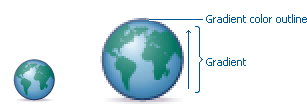Here is an example of a flat outline used to define the edges of a wizard graphic:

2.1.3.2. Composition
Composition of elements within wizard graphics follows most of the same practices described for icons. There are a few wizard-specific compositional concerns to be aware of for actions, objects, and states:
| Actions |
in wizard banner graphics are generally shown in the same location as they are in the icon that launches them. A notable exception is the "create" sparkle, which is not shown at all in the wizard banner image. When in the toolbar wizard, the action is to create a specific kind of object. However, once in the wizard, the object is in the process of being created so the action is no longer necessary. |
| Objects, |
when overlapping, need to be clearly separated to ensure a legible image. The technique used in wizard banner graphics is to put a light glow around the front-most object. |
| States |
of objects, once in the wizard, change to what the state will be once the object is created. The most common example of this is the folder state: it is closed when in a toolbar wizard icon, but open when in a wizard banner graphic because it will be open once in a treeview or list view. |
2.1.3.3. Color
Wizard graphic colors are based on the icons that launch them. The colors used to create a toolbar wizard icon, for instance, should be the same colors used to create its wizard banner counterpart. To download and use the color palette for creating wizard graphics, see the Color Palette & Themes section above under Icons.
As with the icons, wizard banner graphics fall under a limited set of color categories. These color categories are established for most elements and should be reused for like elements to maintain consistency, meaning, and identity. The following examples show how the different categories of color are applied to wizard banner graphics.
Blue and yellow, as with the icons, are the two dominant colors and are used as a basis for many user interface graphics.

Green, as with the icons, is often used to indicate that something is being run or initiated, and as a common accent color. The actions "run" and "play" are primary examples of how green is applied to support the concept.

Red, as with the icons, is used to indicate an error or to signal an alert. It is also used for images that are typically red, such as a thermometer.

Brown, as with the icons, is used to a lesser extent than the other colors noted, but it is generally associated with very specific types of objects. These objects are the Java "package", "bundle", and the "Enterprise Java Bean (EJB)".
Purple, as with the icons, is associated with Java "Interface", plugin "fragment", and "Web Site" or "Site Project".

Beige, as with the icons, is associated with "template" and "generic" objects. While not limited to these two object types, beige is usually reserved for placeholder or unrealized objects.
- Background color
-
The background for wizard banners is part of the final graphic. It is a light blue curvilinear element that does not vary. However, the background color of the banner area does vary from one operation system and theme to another.
Previous to Eclipse 3.3, all wizard banner graphics were in GIF format, which meant that the blue curvilinear element blended to a white background that was part of the final cut image. This worked well on standard Windows and OSX themes that have a white banner background, but not on Linux flavors that have a grey banner background. Fortunately, Eclipse now supports the PNG graphic format and all Eclipse Project (SDK) wizard banner graphics have been converted to PNG so that graphic blends to whatever background color it sits on.
|
Guideline 2.1 (3.x update) Follow the visual style established for Eclipse UI graphics. |
|
Guideline 2.2 (3.x update) Use a common color palette as the basis for creating graphical elements. |
2.2. Consistency & Reuse
This section encourages consistency and reuse of existing graphical elements, and shows the core icon and wizard concepts currently in the tools.
In the development of the Eclipse style graphical elements, a visual language was formed to describe a variety of concepts in the user interface. These concepts are now represented by a large selection of tiny visual signs that many have come to know through using Eclipse-based tools.
In order to ensure a consistent visual experience, a common understanding of concepts across the tools, and to minimize confusion, we encourage you to re-use Eclipse-style graphical elements whenever possible.
2.2.1. Re-using graphical elements
A great many icons and wizard graphics have already been created in the Eclipse visual style, so there is a good chance that the elements you might need already exist. Samples of existing core concepts for icons and wizard graphics are shown below. Each of these elements carries with it a specific meaning, so care should be taken when using them to ensure consistent meaning is maintained. A more extensive collection of common visual elements can be found on the Common Elements page.
2.2.2. Core icon concepts
Click here or on the image above to download the "core_icon_concepts.psd".
2.2.3. Core wizard graphic concepts

Click here or on the image above to download the "core_wizard_concepts.ai" and the "core_wizard_concepts.psd" files.
|
Guideline 2.3 Re-use the core visual concepts to maintain consistent representation and meaning across Eclipse plug-ins. |
2.3. Common Elements
This section provides a library of graphical elements that have already been developed for Eclipse-based tools. This extensive selection of common elements provides not only a base for creating new icons and wizard graphics, but for reusing existing ones as they are. Used in conjunction with the core concepts shown in the Consistency & Reuse section, this library will enable efficient creation of graphical elements and promote consistency throughout the user interface.
2.3.1. Icon elements
Click here to download the “common_icon_elements_eclipse-proj.psd” for Eclipse Project icons and the "common_icon_elements_eclipse-tools.psd" file for a subset of icons related to Eclipse-based tools.
2.3.2. Wizard elements

Click here to download the "common_wizard_elements.ai" vector-based file for designing wizard banner graphics and the "common_wizard_elements.psd" raster-based file for cutting them.
|
Guideline 2.4 Re-use existing graphics from the Common Elements library or other Eclipse-based plugins. |
2.4. States
This section describes the use of enabled and disabled icons in the user interface. It also provides instructions and an automated action set for creating the disabled state of your enabled color icons, a useful tool when producing a large volume of icons.
2.4.1. Icon States
This section describes the use of enabled and disabled icons in the user interface. It also provides instructions and an automated action set for creating the disabled state of your enabled color icons, a useful tool when producing a large volume of icons.
2.4.1.1. Enabled state
The enabled icon state is the color version of all toolbar, toolbar wizard, and local toolbar icons. This state indicates that a command is active and available for use. Information on creating the enabled color version of these icons can be found under Style & Design above.
2.4.1.2. Disabled state
The disabled icon state is a dimmed version of the enabled color toolbar, toolbar wizard, and local toolbar icons. This state indicates that a command is inactive and not available for use. The following image shows a set of disabled toolbar icons beside the enabled state. Note that the disabled versions are not strictly grayscale, they retain a hint of color from the original icon. This is achieved by adjusting the saturation and lightness as you will see in the automated action below:

| It is important to implement the graphical versions of the disabled state for toolbar and local toolbar icons. The quality and legibility of algorithmically rendered disabled icons is poor and they are not consistent with the majority of other tools that use the graphical versions. |
2.4.1.3. Creating the disabled icon state
To create this state, you will use the "eclipse_disabledrender_R3V6.atn" action in the Eclipse-style Actions palette. Click here to download the Eclipse-style Actions.
-
Load the "eclipse_disabledrender_R3V6.atn" into the the Adobe Photoshop Actions palette.
-
Use the marquee tool to select all the enabled versions of the toolbar and local toolbar icons you plan to create a disabled state for.
-
Next, hold the control key and hit the left or right arrow key once, then let go of the control key and hit the opposite arrow key to bump the images back into their exact initial position.
-
Start the "Create Disabled State" action by clicking on the "play" arrow at the bottom of the Actions palette. A copy of the color icons will be created and a series of changes will be made to the copies to make them look disabled. It happens quickly so if you want to deconstruct it, you will need to enable the dialog boxes to show while you run the action. These toggles on located on the left side of the Actions palette.
-
Once the disabled state is made, there is usually some minor adjustments required. We recommend you go through each icon and tweak any pixels that don’t look right and to give a consistent treatment to similar elements.
Here is what the "Create Disabled State" action looks like in the Actions palette:

2.4.1.4. Toggled states
The toggled state is used on toolbars, local toolbars, and in menus. On toolbars and local toolbars, a toggle is represented by a button with two physical positions—up and down—which define a state, most commonly “on” and “off”. Icons on a toggle button, like the tool tips that accompany them, should persist from one state to the next. The only thing that changes is the position of the button. For example:

Sometimes a toggle is not a simple on/off state. For example, there might be two different ways information can be displayed in a view. In this case, two buttons with two separate icons are required. The buttons sit beside one another on the local toolbar and when one is on, the other is off.
2.4.1.5. Opened and closed folder states
In the treeview, ideally, folders would be closed when the -/+ widget beside the folder icon is in a closed state, as in [], and opened when the -/ widget beside the folder icon is in an opened state, as in [-]. Because Eclipse does not animate opened and closed folder states in the treeview, project folders and regular folders are closed on the toolbar and local toolbar, but open in wizard banners and in treeviews. Here is the reasoning:
On the toolbar, a closed folder represents one that has not been created yet. In a wizard banner, an open folder represents one that will be created in the form of a model object in the treeview. In the treeview, an open folder represents one an existing and active folder.
One notable exception to open folders in the treeview is when used to represent a “group”, as is the case with high-level project groupings in the Project Explorer View. These are shown with closed folders.

| All instructions for creating visual elements are based on using Adobe Photoshop 7.0 and above and Adobe Illustrator 9.0 and above. If you use earlier versions of these tools, the instructions may not work exactly as described. |
|
Guideline 2.5 Create and implement the graphical versions of the disabled state for toolbar and local toolbar icons. |
2.5. Templates
This section provides design files for producing different types of user interface graphics. A description of the templates and guidance on how to work with them is provided to help you get started quickly and working effectively.
All design templates here.
This section provides design files for producing different types of user interface graphics. A description of the templates and guidance on how to work with them is also provided to help you get started quickly and working effectively.
Maintaining the simple structure of the templates will facilitate easy file sharing and efficient production of a large set of graphics for one tool.
2.5.1. Icon Design Template
-
Populating the template: Fill out the icon_design_template.psd file with the names of all known required icons separated by type, for example view, toolbar, and model object. Feel free to add or remove rows as you need them. Each plug-in should have its own separate Photoshop document (PSD). If you have access to old icon files, these can be placed into the orig. (original) column as a reference or starting point.
-
Designing the icons: Before beginning to design Eclipse-style icons or wizard banner graphics, first check if the concept or visual elements have been covered already. See the Consistency and Reuse and Common Elements sections.
Create initial passes of your ideas, and then place them in the template. Up to five different concepts for any given icon can be placed in the version cells provided, i.e., columns A, B, C, D, and E.
When you are satisfied with the results, mark the icons you think are the strongest candidates with boxes on the preferred (black) layer, and send to the requester for feedback in the form of a flattened GIF image.
-
Revising the original concept: It is likely that revisions to the first pass will be required. If there is room, revised icons can be placed in the version cells next to the first pass ones. If you run out of cells or need to erase any previous icon concepts, but do not want to lose them forever, save a new version of the design file and make space for new ideas by removing the icons that are not likely to be used.
Once the icons have been approved, move the chosen images to the cut column. To ensure they are positioned properly within the allotted screen space, turn on the cut layer (pink) in the PSD. For guidance on size and placement of different types of icons, see the Icon Size and Placement section.
-
Creating the disabled versions: See the States section for instructions on creating the disabled state for Toolbar and Local Toolbar icons.
-
Cutting the icons: See the Cutting Actions section for instructions on cutting the final images for delivery.
-
Marking revised icons: It is likely that even after the icons have been cut and delivered to the developer, further revisions will be required or entirely new icons may be requested. To keep track of which icons and their instances need to be cut or re-cut, a red box can be placed around each, using the cut or re-cut (red) layer.
2.5.2. Wizard Design Template
-
Populating the vector-based template: Fill out the vector-based template vector-wizard_design_template.ai with the names of all required wizard banner graphics. As with the Icon Template, you can add or remove rows to suit the number of graphics you will be creating. If you have access to the related toolbar wizard icon file, add it to the file as a primary starting point. If you have access to old wizard graphics, these can be placed into the orig. (original) column as a secondary starting point.
-
Designing the wizard banner graphics: Before beginning to design Eclipse-style wizard banner graphics, first check if the toolbar icon that launches the wizard has been created already. This will provide the basis of your design. Also, check if any of the visual elements that will be part of the wizard graphic have been created already in Adobe Illustrator. See the Consistency and Reuse and Common Elements sections for existing elements.
The concept for a wizard banner should be closely aligned with, if not identical to, the toolbar wizard icon that launches the wizard dialog. Create an initial pass of each image on the New Wizard graphics layer, following the wizard banner stylistic treatment detailed in the Style & Design section. As with the icons, more than one pass on the design may be required before coming to the final design.
When you are satisfied with the results, create a JPEG version of the template and send it to the requestor for feedback. Be sure to include the toolbar icon that corresponds to the wizard banner graphic as a reference.
-
Transferring vector-based images to the PSD template: Once the graphics are approved and ready to be cut, you will need to transfer them from the AI template to the PSD template. In the AI template, turn off all layers, except New Wizard graphics.Select File > Save for Web from the menu. The settings you will need for this part of the transfer are shown here:

The PNG-24 file is temporary and is used to transfer high quality images from the AI file to the PSD file where you will use an action palette to cut the files.
-
Populating the PSD template : Fill out the eclipse_wizard_design_template.psd template with Layer Sets for each wizard banner graphic. Each Layer Set should have a single layer for the PNG-formatted wizard image. Add Layer Sets as you need them.
Open the temporary PNG file and transfer the wizard graphics, one per layer, to the corresponding Layer Set in the PSD file. Once all of your wizard graphics are transferred, Save the file. You are ready to cut.
-
Cutting the wizard banner graphics: See the Cutting Actions section for instructions on cutting wizard banner graphics.
|
Guideline 2.6 Use the design templates for creating and maintaining UI graphics to facilitate easy file sharing and efficient production of a large set of graphics. |
3. Specifications
This section details technical information you will need to design and prepare your Eclipse-style graphics for implementation.
3.1. File Formats
This section lists and describes the graphic file formats used for the different graphic types.
3.1.1. GIF - Graphics Interchange Format
GIF images are raster-based, can have transparency, and tend to use a small amount of memory and disk space. Each GIF file contains a color palette of up to 256 individual colors. This format is most suited to images that use flat colors or have a limited number of colors. It is not a suitable format for photographic images.
GIF files use lossless compression, but that may be misleading. A GIF image is not necessarily identical to original image. Because GIF images can contain a maximum of 256 colors, images that contain greater than 256 colors must be reduced to 256 colors through quantization (and optionally, dithering) to approximate the original colors. It is not necessary to quantize or dither GIF icons that are 16 x 16 pixels because such icons contain only 256 pixels. The GIF file palette limitation is, however, something to be aware of when creating larger images.
3.1.2. PNG - Portable Network Graphics
PNG is a bitmapped image format that employs lossless data compression. PNG was created to improve upon and replace the GIF format, as an image-file format not requiring a patent license. PNG is pronounced "ping" (/pɪŋ/ in IPA), but can be spoken "P-N-G" (as described at en.wikipedia.org/wiki/PNG). One of the great values of PNG format is its support for alphas or transparency, allowing bleed through of the background on which these graphics sit.
PNG is used for the following types of graphics in Eclipse-based tooling:
-
Product
-
View (includes Perspective and Fast View)
-
Toolbar (includes Toolbar Wizard)
-
Local Toolbar
-
Model Object
-
Object Overlay (includes Underlay)
-
Wizard Banner
-
Table
-
Palette
-
Diagram (exceptions noted below under SVG)
-
Progress Indicator
-
Miscellaneous (there might be exceptions)
3.1.3. SVG - Scalable Vector Graphics format
SVG is a language for describing both two-dimensional and animated vector-based graphics in XML. One of its distinguishing attributes is its scalability: One size of an image will scale nicely to unlimited sizes. While there is great potential in using SVG for user interface graphics, especially on palettes and in diagrams, it currently has limited use in the tooling.
SVG is used for the following types of graphics in Eclipse-based tooling:
-
Diagram (Action Bar only)
In designing graphics for SVG output, use a minimal number of elements in each image, especially for small 16 x 16 icons. This will help ensure image clarity, and fewer elements will keep the file size small.
3.1.4. BMP - Bit map format
BMP is the standard Microsoft Windows raster image format.
BMP is used for the following types of graphics in Eclipse-based tooling:
-
Pointer
-
Cursor
3.1.5. ICO - Icon format
ICO format is used on the Microsoft Windows operating system and is required for product install and launch icons, including desktop, treeview, and menu icons.
ICO is used for the following type of graphics in Eclipse-based tooling:
-
Product icons (Windows)
3.1.6. ICNS - Mac Icon format
-
Product icons (Mac)
3.1.7. XPM - X PixMap format
XPM is an ASCII image format that supports transparent color. This image format is used on Linux and is required for product install and launch icons, including desktop, treeview, and menu icons.
XPM is used for the following type of graphics in Eclipse-based tooling:
-
Product icons (Linux)
|
Guideline 2.7 Use the file format specified for the graphic type. |
3.2. Graphic Types
This section describes the different types of graphics that are used in Eclipse-based tools, and where they are located within the user interface.
The Eclipse style graphics have been categorized into separate types so that each can be optimized for its specific location. The majority of interface graphics are 16 x 16 pixels in size, though there are some graphic types that come in additional or unconventional sizes suited specifically to their use. Details on size and placement of the image see the next subsection on Icon Size & Placement. The following graphic types are described below:
3.2.1. Product
The Product icon, also known as the Application icon, represents the branding of the product and is always located on the far left of the window title bar before the perspective, document, and product name. These icons are also used to launch the product from the menu or from a desktop or treeview shortcut, and as product identifiers in the About screen. Since these icons are intended for use in specific places, they are not meant for use on toolbars or in the user interface in general.

| Format |
ICO (Windows), ICNS (Mac), XPM (Linux) |
3.2.2. Perspective
Perspective icons represent different working environments called "Perspectives". Each perspective is a set of views and content editors with a layout conducive to the tasks associated with that environment. The perspective icons allow the user to quickly switch between different opened perspectives. By default, these icons are located in the top right of the user interface to the right of the main toolbar, and have a horizontal orientation. They can also be docked on the top left just below the toolbar, keeping a horizontal orientation, or on the left of the navigator view with a vertical orientation.

| Type |
View |
| Folder name |
view16 |
| Size |
16 x 16 pixels |
| Format |
PNG |
3.2.3. Fast View
Fast View icons allow users to quickly display different views that have been created as fast views. These icons are by default located in the bottom left of the user interface and have a horizontal orientation. They can also be docked with a vertical orientation on the left of the navigator view, or on the far right of the user interface.

| Type |
View |
| Folder name |
view16 |
| Size |
16 x 16 pixels |
| Format |
PNG |
3.2.4. Toolbar
Toolbar icons are located on the main toolbar across the top of the workbench. They represent actions, and will invoke a command, either globally or within the editor.

| Type |
Toolbar |
| Folder names |
etool16 and dtool16 |
| Size |
16 x 16 pixels |
| Format |
PNG |
3.2.5. Toolbar Wizard
Toolbar wizard icons are found on the main toolbar across the top of the workbench as well as in the New wizard dialog list. Selecting one of these icons will launch a wizard. The most common type of toolbar wizard is for creating "new" objects or resources. These are easily recognized by their gold sparkle in the upper right corner of the icon. The other common type of toolbar wizard is for generating files. These icons are distinguished by two stacked files in front of a diskette.

| Type |
Toolbar |
| Folder names |
etool16 and dtool16 |
| Size |
16 x 16 pixels |
| Format |
PNG |
3.2.6. View
View icons are found on the left side of the titlebar of each view within the workbench. These icons indicate each view’s function or the type of object a view contains.

| Type |
View |
| Folder name |
view16 |
| Size |
16 x 16 pixels |
| Format |
PNG |
3.2.7. Local Toolbar
Local toolbar icons are found to the right of the view icon on the titlebar of each view within the workbench. They represent actions, and invoke commands on objects in only that view. Local toolbar type icons are also used in all menus, including main, pull down, and context menus.
| Type |
Local Toolbar |
| Folder names |
elcl16 and dlcl16 |
| Size |
16 x 16 pixels |
| Format |
PNG |
3.2.8. Model Object
Model Object icons are found in tree views, list views, and on editor tabs within the workbench. They represent objects and sometimes states, but not actions. Examples of model object icons are project folders and file types. Note that objects selected in the navigator view, such as the Package Explorer in the Java Perspective, have a one-to-one relationship with the file open in the Editor View, i.e., the same icon is used in both the navigator view and the Editor tab. In contrast, in the Outline View, the model object selected is not shown in the Editor, but the selection itself is shown in both the Outline View and the source code within the Editor.
One-to-one relationship between model object in treeview and icon in Editor tab

Model object in Outline View is not shown in the Editor, but the selection is shown in both views
| Type |
Model Object |
| Folder name |
obj16 |
| Size |
16 x 16 pixels |
| Format |
PNG |
3.2.9. Object Overlay (and Underlay)
Object overlay icons are decorator elements that are used in tree or list views. They are appended to model object icons as signifiers of an object type, status, attribute, transition state, multiplicity or some sort of change. Underlays are a special type of underlay that go under the model object. Like the overlay, they signify some kind of change about the model object they append to.

There are six main types of overlays:
-
Project Nature or Type
These overlays are displayed in the Navigator and the Package views. They are completely superimposed on the model object at the top right corner of the 16 x 16 icon space.Only a few project nature overlay icons have been created to prevent crowding in the interface. Project nature overlays quickly identify the various types of projects that can be contained in the Navigator and mirroring views.
The white keyline border is applied around the image to enhance legibility.
Example:

Type Object Overlay
Folder name ovr16
Size 7 x 8 pixels
Format PNG
-
Auxiliary or Status
These overlays are displayed in all tree views. This type of overlay is completely superimposed on the model object at the bottom left corner of the 16 x 16 icon space.The auxiliary overlay quickly identifies the status of an object. Examples of auxiliary overlays are warning, error, failure, and success.
Example:
Type Object Overlay
Folder name ovr16
Size 7 x 8 pixels
Format PNG
-
Java or Attribute
These overlays are displayed in the Outline, Hierarchy, and Package views. The Java overlays are appended to the model object icon, so they extend the 16 x 16 icon space. They are placed to the right of a model object icon, overlapping the 16 x 16 model object space by 3 pixels. A maximum of 3 java overlays can be put on the model object.The order in which an overlay appears depends on the order in which it has been assigned. In designing Java overlays, it is important to make sure the base object icon can support the addition of overlays without compromising readability. Note that there are two Java overlays that always display at the bottom right corner of the model object: Synchronize overlay synchronized (method) and Run overlay run (class).
Java overlays identify attributes of an object. Examples include static, final, abstract, and synchronized.
In the Hierarchy and Outline views, the Java overlays are appended to the right of the model object as shown in the first example below, but in the Package view they are stacked over the model object, as shown in the second example. Examples:
-
Hierarchy and Outline Views:

-
Package View:

Type Object Overlay
Folder name ovr16
Size 7 x 8 pixels
Format PNG
-
-
Version Control or Transition-state
These overlays are displayed in the Navigator view and in the Structure View of the Merge Editor in CVS. When they are displayed in the Navigator view, the overlay is completely superimposed on the model object at the right of the 16 x 16 icon space.When the version control overlays are displayed in the Structure View of the Merge Editor in CVS, they are appended to the model object, so they extend the 16 x 16 space. They are placed to the right of a model object icon, overlapping the 16 x 16 model object space by 3 pixels. In CVS there is a maximum of 2 overlays on the right of the object.
Version control overlays identify a transition state of an object. Examples of these overlays are incoming, outgoing, in conflict, added, deleted, and changed.
Examples:
-
Navigator View:

-
Structure View:

Type Object Overlay
Folder name ovr16
Size Typically 7 x 8 pixels, though some are larger
Format PNG
-
-
Multiplicity
These overlays are displayed in the treeview of a generator model file in the Eclipse Modeling Framework (EMF). These represent relationships, such as one to one or one to many within the model. This type of overlay spans the width of the model object icon and is located at its base so that it does obscure too much of the underlying object.Example:
Type Object Overlay
Folder name ovr16
Size 16 x 6 pixels image size but a final cut size of 16 x 16 pixels
Format PNG
-
Underlays
These are displayed under model objects in the treeview of some tools. They signify some kind of change about the object, such as version control or generated code. Underlays are typically square in shape, with a 2 pixel radius on each corner, and are light in color so they are clean and not overstated when seen multiple times in a treeview.Example:

Type Object Overlay
Folder name ovr16
Size 16 x 16 pixels
Format PNG
3.2.10. Table
Table icons are a type of model object icon used specifically in tables as labels, status indication, or to give additional information about the items they accompany in a table row. Although these icons are a type of model object, they are created smaller than regular model objects in order to fit in the table row without distortion or crowding the space.
Table icons shown in context

| Type |
Table |
| Folder name |
obj16 |
| Size |
They are designed in the 16 x 16 pixel space, but the actual image size is no greater than 15 x 14 pixels. |
| Format |
PNG |
3.2.11. Palette
Palette icons are located on the palette and most commonly accompany diagrams or some editable canvas space. In this context, palette icons are either objects that may be added to the canvas, or tools that may be used to manipulate objects or draw lines or shapes on the canvas.
Palettes are also used to host reusable elements, such as the Snippets view, which contains code snippets for reuse. In this context, double clicking on a snippet will either add the snippet directly to the source code or invoke an intervening dialog box, which provides the user choices about the snippet before it is inserted into their source code within the editor. Some code snippets can also be dragged and dropped directly into the source code.
Palette icons shown in context

| Type |
Palette |
| Folder name |
pal |
| Size |
Size varies depending on the context of the palette. The default size is 16 x 16 pixels but can be changed by the user to "Use large icons", which are 24 x 24 pixels in size. There are also rare cases where 32 x 32 pixel icons are used on the palette. |
| Format |
PNG |
3.2.12. Diagram
Diagram icons come in two subtypes: Canvas and Action Bar. Canvas icons are used in the diagram or canvas area. These icons commonly represent object types, but can also be used to mark content type or to show formatting in the preview mode of an editor. The size of a canvas icon depends on its purpose and context. Action Bar icons sit on a kind of "mini palette" within the diagram. This mini palette is contact sensitive and will be shown only when the cursor hovers over or selects a certain type of object in the diagram. For example, 'fields' and 'types' in a UML Diagram.
Diagram icons shown in context

| Type |
Diagram |
| Folder name |
dgm |
| Size |
Canvas icons may be 16 x 16, 24 x 24, or 32 x 32 pixel in size. There are also instances of 15 x 15, 12 x 12, and 10 x 10 pixel icons in some Web Tooling diagrams. 15 x 15 and 10 x 10 icons are used in site navigation diagrams, and 12 x 12 icons are used in the editor preview mode to show content types and formatting. |
| Format |
PNG is used for all diagram graphics, except Action Bar icons, which are SVG. |
3.2.13. Progress Indicator
The progress indicator icon is located in lower right of user interface to the right of the actual progress indicator, which shows the linear progress of a process. As shown in the following image, the icon is also a button that will open the Progress View.
Progress indicator icon shown in context

| Type |
Progress Indicator |
| Folder name |
progress |
| Size |
16 x 16 pixels |
| Format |
PNG |
3.2.14. Pointer and Cursor Mask
Pointer icons are cursors and each requires a cursor mask. The cursor mask is an inverted image, or a complete mask, of the pointer.
Pointer and cursor mask examples

| Types |
Pointer and Cursor Mask |
| Folder name |
point |
| Size |
32 x 32 pixels |
| Format |
BMP |
3.2.15. Wizard Banner
Wizard banner graphics are located on the right side of the wizard banner. They visually represent the outcome of the wizard, such as a new Java class.
New Java class wizard graphic shown in context
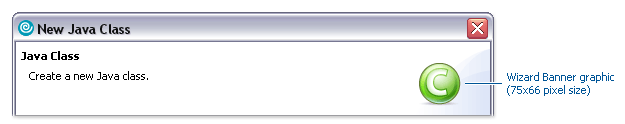
| Type |
Wizard Banner |
| Folder name |
wizban |
| Size |
75 x 66 pixels |
| Format |
PNG |
|
Guideline 2.8 Use the appropriate graphic type in the location it is designed for within the user interface. |
3.3. Icon Size & Placement
This section shows the final cut size of each of the different types of icons, as well as what the placement and drawing area is within the allotted space.
The majority of Eclipse style icons are designed within an area of 16 x 16 pixels. That is the final cut size of the image. Within that area, a 15 x 15 pixel space is reserved for the image itself, leaving both a vertical and horizontal line of empty pixels to allow for proper alignment of the image within the user interface. In the size and placement images below, the light blue represents the image area and the bright pink represents the empty pixel area.
If the height and width of the image are an even number of pixels smaller than 16 x 16 pixels, it is a rule of thumb to center the image within the 16 x 16 space. For example, a 14 x 14 pixel image will have a single row of empty pixels on all four sides.
Exceptions to the common 16 x 16 image size are also detailed below. All sizes are indicated with width before height.
3.3.1. Product
Product icons occupy the full space allotted for all five sizes: 16 x 16, 24 x 24, 32 x 32, 64 x 64, and 72 x 72 pixels. This shows how the 16 x 16 product icon fills the entire space:
Image size in allotted space |
Sample image in place |
|
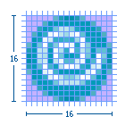 |

3.3.2. Perspective and Fast View
The maximum image size is 16 x 16 pixels, but 15 x 15 is recommended. If the image is 15 x 15 or smaller, the empty pixels must be on the right and bottom, as shown here.
Image size in allotted space
Image size in allotted space |
Sample image in place |
|
|


3.3.3. View
The maximum image size is 16 x 16 pixels, but 15 x 15 is recommended. If the image is 15 x 15 or smaller, the empty pixels must be on the left and bottom, as shown here.
Image size in allotted space |
Sample image in place |
|
|


3.3.4. Toolbar, Toolbar Wizard, and Local Toolbar
The maximum image size is 16 x 16 pixels, but 15 x 15 is recommended. If the image is 15 x 15 or smaller, the empty pixels must be on the left and top, as shown here.
Image size in allotted space |
Sample image in place |
|
|


3.3.5. Model Object
The maximum image size is 16 x 15 pixels, but 15 x 15 is recommended. Model Object icons must be no greater than 15 pixels high. The empty pixels must be on the left and bottom, as shown here.
Image size in allotted space |
Sample image in place |
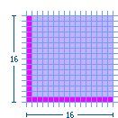 |
|

3.3.6. Object Overlay (and Underlay)
Most object overlay icons are a maximum image size of 7 x 8 pixels, always centered. There are some exceptions to this size, two of which are covered here: the "multiplicity" overlay and the "underlay". The multiplicity overlay spans the width of the model object to a maximum of 16 pixels wide and 6 pixels high. The underlay is a maximum size of 15 x 16 pixels, though commonly they are a square 15 x 15 pixels in size so they are uniform when seen multiple times in the treeview.
Overlay icons should have an outer white keyline surrounding the image to clearly separate them from the model object icons that they over lay. If there is not enough space to add the white keyline all the way around the overlay image, then add the white pixels on only the side that will be overlapping the model object. This can be determined by finding out what type of overlay it is. See the Graphic Types subsection for a sample and description of the different types of overlays. For information on how each of the overlays is positioned on the model object, see the subsection on Positioning in the UI.
Standard object overlay with a maximum image size of 7 x 8 pixels:
Image size in allotted space |
|

Example of a standard Project Nature—Type—object overlay in place:
Image size in allotted space |
Sample image in place |
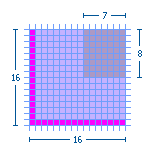 |
|

Example of a standard Auxiliary—Status—object overlay in place:
Image size in allotted space |
Sample image in place |
|
|


Example of a standard Java—Attribute—object overlay in place:
Image size in allotted space |
Sample image in place |
|
|


Example of a standard Version Control—Transition-state—object overlay in place:
Image size in allotted space |
Sample image in place |
|
|


Example of two stacking Version Control object overlays in place:
Image size in allotted space |
Sample image in place |
|
|


Multiplicity object overlay with a maximum image size of 16 x 6 pixels:
Image size in allotted space |
Sample image in place |
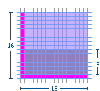 |
|

Underlay with a maximum image size of 16 x 15 pixels, but 15 x 15 is recommended. The empty pixels must be on the left and bottom, as shown here:
Image size in allotted space |
Sample image in place |
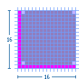 |
|

3.3.7. Table
The maximum image size is 15 x 14 pixels. Table icons must be no greater than 14 pixels high. The empty pixels must be on the top, bottom, and left, as shown here.
Image size in allotted space |
Sample image in place |
|
|


3.3.8. Palette
Standard small (16 x 16) palette icon: The maximum image size is 16 x 15 pixels, but 15 x 15 is recommended. Palette icons must be no greater than 15 pixels high. The empty pixels must be on the left and bottom, as shown here.
Image size in allotted space |
Sample image in place |
|
|


Standard large (24 x 24) palette icon: The maximum image size is 24 x 23 pixels, but 23 x 23 is recommended. Palette icons must be no greater than 23 pixels high. The empty pixels must be on the left and bottom, as shown here.
Image size in allotted space |
Sample image in place |
|
|


Large (32 x 32) palette icon: The maximum image size is 30 x 30 pixels with the image centered. The empty pixels are on all four sides of the image.
Image size in allotted space |
Sample image in place |
|
|


3.3.9. Diagram
Small (10 x 10) canvas icon: The maximum image size is 10 x 10 pixels. The image fills the space as required.
Image size in allotted space |
Sample image in place |
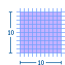 |
|

Small (12 x 12) canvas icon: The maximum image size is 12 x 12 pixels. The image fills the space as required.
Image size in allotted space |
Sample image in place |
|
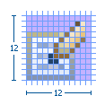 |

Small (16 x 16) canvas icon: The maximum image size is 16 x 15 pixels, but 15 x 15 is recommended. The empty pixels must be on the left and bottom, as shown here.
Image size in allotted space |
Sample image in place |
|
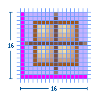 |

Large (24 x 24) canvas icon: The maximum image size is 24 x 23 pixels, but 23 x 23 is recommended. The empty pixels must be on the left and bottom, as shown here.
Image size in allotted space |
Sample image in place |
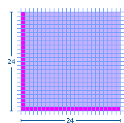 |
|

Large (32 x 32) canvas icon: The maximum image size is 32 x 32 pixels, but 30 x 30 is recommended with the image centered. The empty pixels are on all four sides of the image.
Image size in allotted space |
Sample image in place |
|
|


3.3.10. Progress Indicator
The maximum image size is 16 x 15 pixels, but 15 x 15 is recommended. Progress indicator icons must be no greater than 15 pixels high. The empty pixels must be on the left and bottom, as shown here.
Image size in allotted space |
Sample image in place |
|
|


3.3.11. Pointer and Cursor Mask
The final size of the pointer and cursor masks is 32 x 32 pixels. The actual image size of the pointer is usually fewer than 20 x 20 pixels, often 16 x 16 pixels, but can also fill the entire 32 x 32 space. There are no empty pixels in the pointer and cursor mask images. Both are filled completely with black and white, with the mask being the opposite of the pointer or masking it out entirely.
Pointer and cursor mask image sizes shown in the 32 x 32 pixel space:
Image size in allotted space |
Sample image in place |
|
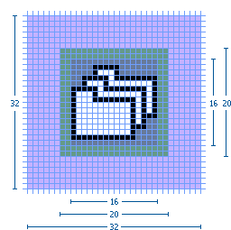 |

3.3.12. Wizard Banner
All wizard banner graphics are designed to fit within a specified screen space of 75 x 66 pixels on the right side of the wizard banner.
The actual size of each graphic will vary depending on the elements involved, but will generally be around 67 x 50 pixels in size.
Within the banner space allocation, there is no firm rule for where to place the wizard graphic. Generally, the graphic is centered vertically, and off-center to the left horizontally.


|
Guideline 2.9 Follow the specific size specifications for each type of graphic. |
|
Guideline 2.10 Cut the graphics with the specific placement shown to ensure alignment in the user interface. |
4. Implementation
This section provides automated cutting actions, and conventions for file and folder naming and structure.
4.1. Cutting Actions
This section describes the macros for cutting icons, icon overlays, and wizard banner graphics to get them ready for implementation.
In the process described here for creating icons, we use the term 'cut' to mean the action of generating the individual .png files for each icon. This term refers to the fact that the icons are created in a single original .psd file that contains all the icons for a given product (the icon_template.psd file), and then the individual icons are 'cut' out of the file into individual files.
To increase the speed and efficiency of cutting hundreds of icons at a time, a series of cutting actions has been created that, when run in Adobe Photoshop, will automatically guide you through the cutting process for each icon in a matter of seconds. All you need to do is start the action and when prompted, name and save each icon into its proper folder.
To use these actions, click here to download the media:eclipse_cutting_R3V6.zip[eclipse_cutting_R3V6.atn] file, and then load it into the Actions Palette.
4.1.1. Cutting 16 x 16 Pixel Icons
-
Make sure that the pink cut layer is turned on, in the psd file.
-
Play the Dupe and Flatten_main file action to create a new, flat file. (See A in the Detailed View of Cutting Actions below)
-
Using the Marquee tool at a fixed size of 16 x 16 pixels, select the first icon to be cut.
-
Play the eclipse icon cuts_16s action. The action will then automatically move through the cutting process. (See B-F below)
-
When prompted, provide a name for the icon in lower case and click Save to save it as a Compuserve .png in the folder you specify. (See G)
-
When you click OK to finish saving the image as either a Normal or Interlaced .png file, the action then automatically moves the marquee selection down to the next icon and begins the process all over again. (See H)
To ensure the last step works properly, make sure the pink cut square for each icon is spaced exactly as specified in the icon_design_template.psd.
4.1.1.1. Detailed View of Cutting Actions
4.1.2. Cutting 7 x 8 Pixel Object Overlay Icons
Follow the steps as laid out above, except cut the icon at 7 x 8 pixels, using the Eclipse icon cuts_overlays action.
4.1.3. Cutting Wizard graphics
-
Ensure that the wizard psd has a path called "wizard cut path" under Paths tab.
-
Play the Dupe and Flatten_main file action to create a new, flat file.
-
Ensure that the layer called "soft curves" is visible.
-
Ensure that each wizard graphic is in a layer set.
-
Select the top layer set where you want to being cutting and ensure all other layer sets are not visible.
-
Play the Wizard Dupe and crop action to create a new file that is cropped to 75 x 66 pixels. (See A-C below)
-
Play the Wizard cut action. The action will then automatically move through the cutting process from top to bottom in the layers palette. (See D below)
-
When prompted, provide a name for the icon in lower case and click Save to save it as a Compuserve .png in the folder you specify. (See E)
-
When you click OK to finish saving the image as either a Normal or Interlaced .png file, the action then automatically delete the current layer set, and moves to the next one and begins the process all over again. (See F)
To ensure the last step works properly, make sure each wizard graphic is contained in a layer set folder.
4.1.3.1. Detailed View of Cutting Actions

|
Guideline 2.11 Use the cutting actions provided to increase the speed and efficiency of cutting a large number of graphics. |
4.2. Naming Conventions
This section describes the Eclipse standard for file naming and guidelines for using suffixes that will help others quickly identify the graphic type or function.
We recommend that you work with your development contact to establish file names for each graphic before you begin design work, using the following guidelines:
4.2.1. Abbreviations
The file name should be an abbreviation of the full icon name, for example, the name for the Create DTD Wizard icon might be abbreviated to "CrtDTD".
4.2.2. Case
All file names must be in lower case, for example, CrtDTD becomes "crtdtd".
4.2.3. Character length
File names should be 10 characters or fewer whenever possible. Underscores count as a character.
4.2.4. Suffixes
The file name should end with a suffix that describes its location or function in the user interface, for example, "crtdtd_wiz.png". See the table below for suffix suggestions.
4.2.5. Multiple sizes
Icons that have multiple sizes within one folder, such as multiple palette icon sizes, are differentiated by adding the icon size to the suffix. For example, file_pal, file_pal24, file_pal32, where *_pal represents the default 16 x 16 pixel size and the *_pal24 and *_pal32 represent larger sizes of the same icon.
4.2.6. Suggestions for File Naming Suffixes
|
Guideline 2.12 Abbreviate file name instead of using the full icon name, e.g., New Interface becomes "newint". |
|
Guideline 2.13 Use lower case characters in your file names, e.g., DTD becomes "dtd". |
|
Guideline 2.14 Use 10 characters or fewer in your file names if possible (underscores count as a character). |
|
Guideline 2.15 Use a file name suffix that describes its location or function in the tool, e.g., newint_wiz, or its size in the case of icons that require multiple sizes. |
|
Guideline 2.16 Keep the original file names provided. |
4.3. Folder Structure
This section provides the Eclipse standard for folder names and structure for storing and implementing graphics within your plugin.
Once your graphics are ready for implementation they should be cut and saved into the folder naming and structure system described below. This system is based on the Eclipse plug-in folder naming and structure. When you compress your files for delivery using this system, they can be easily uncompressed directly into the intended plugin.
-
The name of the first level folder depends on where the plugin resides:
-
Eclipse Project components use the org.eclipse.componentname.ui convention for plugin names.
-
Eclipse Tools components use the org.eclipse.subprojectname.componentname.ui convention for plugin names.
-
IBM components use the com.ibm.etools.componentname.ui convention for plugin names.
Substitute the name of the plugin, for example "debugger", for "componentname", and the name of the subproject, such as "wst" for "subprojectname".
To read more about plugin names in Eclipse, see the Eclipse Platform Naming Conventions help page.
-
-
Each plugin that contains user interface graphics requires an icons folder.
-
Within the icons folder, there are separate folders with names that indicate the state, type, and in some cases size, of the icons within, as described below:
-
The first letter of Toolbar and Local toolbar folder names indicates the icon state. Use the letter d for disabled, or e for enabled.
-
The next 3 to 8 letters signify the icon type: diagram (dgm), local toolbar (lcl), toolbar (tool), model object (obj), object overlay (ovr), palette (pal), pointer (point), product (prod), progress indicator (progress), view and perspective (view), and wizard banner (wizban).
-
The last two digits of the folder name are intended to indicate the size of the icons within. However, only a small number of folders show size in the name. These names will persist, but all folder types may now contain multiple sizes of images, such as 16 x 16 and 24 x 24 pixel versions of palette icons. The Naming Conventions subsection addresses file naming for multiple sizes within one folder.
The following image shows a complete folder structure for a plug-in:


-
4.3.1. Notes:
-
For some legacy plug-ins, inside the icons folder, there is a folder called full, which then contains these icon type folders. Find out from your development contact if this extra folder is required.
-
We recommend that you do not use the dnd folder name as it used by development for drag and drop elements. These are cursor mask icons for moving views within the application.
|
Guideline 2.17 Follow the predefined directory structure and naming convention. |
|
Guideline 2.18 Keep the original directory names provided. |
|
Guideline 2.19 Minimize duplication of graphics within a plugin by keeping all graphics in one, or few, first level user interface directories. |
|
Guideline 2.20 Use the active, enabled, and disabled states provided. |